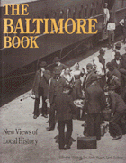

<body bgcolor="#FFFFFF" text="#000000" link="#0000FF" vlink="#CC0000" alink="#CC0000"><center><hr width="350" size="1" align="center" noshade>A tour guide to places in the city that are important to labor, African Americans, and women's history<hr width="350" size="1" align="center" noshade><p><a href="https://cdcshoppingcart.uchicago.edu/Cart/ChicagoBook.aspx?ISBN=9780877228172&&PRESS=temple" target="_top">Buy this book!</a> | <a href="https://cdcshoppingcart.uchicago.edu/Cart/Cart.aspx?PRESS=temple" target="_top">View Cart</a> | <a href="https://cdcshoppingcart.uchicago.edu/Cart/Cart.aspx?PRESS=temple" target="_top">Check Out</a></p><p></p></center><!--none//--><h1>The Baltimore Book</h1>
<H2>New Views of Local History</H2>
<h3>edited by Elizabeth Fee, Linda Shopes and Linda Zeidman</h3>
<P>cloth 0-87722-817-5 $65.50, Oct 91, <FONT COLOR=#990033>Out of Stock Unavailable</FONT>
<br>paper 1-56639-184-9 $34.95, Nov 93, <FONT COLOR=#990033>Available</FONT>
<br>Electronic Book 1-43990-173-2 $34.95 <FONT COLOR=#990033>Out of Stock Unavailable</FONT>
<BR> 256 pp
11&nbsp;map(s) 150&nbsp;figures
</P><BLOCKQUOTE><I>"[The] authors infuse the city and its history with life.... [Readers] will emerge with an uncommonly complete picture of the character of Baltimore and its people."</I>
<br>&#151<b>Nancy Brennan</b>, Executive Director, Baltimore City Life Museums<I></I></BLOCKQUOTE>
<p>Baltimore has a long, colorful history that traditionally has been focused on famous men, social elites, and patriotic events. <I>The Baltimore Book</I> is both a history of "the other Baltimore" and a tour guide to places in the city that are important to labor, African American, and women's history. The book grew out of a popular local bus tour conducted by public historians, the People's History Tour of Baltimore, that began in 1982. This book records and adds sites to that tour; provides maps, photographs, and contemporary documents; and includes interviews with some of the uncelebrated people whose experiences as Baltimoreans reflect more about the city than Francis Scott Key ever did.
<p>The tour begins at the B&O Railroad Station at Camden Yards, site of the railroad strike of 1877, moves on to Hampden-Woodbury, the mid-19th century cotton textile industry's company town, and stops on the way to visit Evergreen House and to hear the narratives of ex-slaves. We travel to Old West Baltimore, the late 19th-century center of commerce and culture for the African American community; Fells Point; Sparrows Point; the suburbs; Federal Hill; and Baltimore's "renaissance" at Harborplace. Interviews with community activists, civil rights workers, Catholic Workers, and labor union organizers bring color and passion to this historical tour. Specific labor struggles, class and race relations, and the contributions of women to Baltimore's development are emphasized at each stop.
<BR>&nbsp;<h2>Reviews</h2>
<p><I>"</I>The Baltimore Book<I> tells the story of the real people of Baltimore&#151the true fabric of the city. These are the courageous individuals who fought for their right to work, and fought for their right to buy a home and live where they chose. Their goals and their struggle to achieve those goals is the real story of how a city grows."</I>
<br>&#151<b>Barbara A. Mikulski</b>, United States Senator from Maryland
<p><I>"...'must' reading for anyone who wishes to develop a comprehensive view of the city's history in the late nineteenth and twentieth centuries...."</I>
<br>&#151<b>Robert J. Brugger</b>, Editor, <I>Maryland Historical Magazine</I>
<p><I>"</I>The Baltimore Book<I> provides a graphic, at times chilling, portrait of working and living conditions for generations of poor and working-class Baltimoreans."</I>
<br>&#151<b><I>The Baltimore Sun</I></b>
<p><I>"A refreshing, user-friendly, populists' history, this new book chronicles the history of the city through the eyes and emotions of its working classes."</I>
<br>&#151<b><I>Baltimore Magazine</I></b>
<BR>&nbsp;<h2>Contents</h2><P>
<p>Introduction: Toward a New History of Baltimore
<br>Acknowledgments
<br>1. Camden Yards and the Strike of 1877 &#150 Sylvia Gillett
<br>2. Evergreen House and the Garrett Family: A Railroad Fortune &#150 Elizabeth Fee
<br>3. Hampden-Woodberry: Baltimore's Mill Villages &#150 Bill Harvey
<br>4. Old West Baltimore: Segregation, African-American Culture, and the Struggle for Equality &#150 Karen Olson
<br>5. The City that Tries to Suit Everybody: Baltimore's Clothing Industry &#150 Jo Ann E. Argersinger
<br>6. East-Side Union Halls: Where Craft Workers Met, 1887-1917 &#150 Roderick Ryon
<br>7. Fells Point: Community and Conflict in a Working-Class Neighborhood &#150 Linda Shopes
<br>8. Radicalism on the Waterfront: Seamen in the 1930s &#150 Linda Zeidman and Eric Hallegren
<br>9. Sparrows Point, Dundalk, Highlandtown, Old West Baltimore: Home of Gold Dust and the Union Card &#150 Linda Ziedman
<br>10. Flight to the Suburbs: Suburbanization and Radical Change on Baltimore's West Side &#150 W. Edward Orser
<br>11. A View from Federal Hill &#150 David Harvey
<p><I>Interviews with Former Slaves</I>: Caroline Hammond and Richard Macks
<br><I>Interviews with Civil Rights Activists</I>: Dr. John E.T. Camper and J. Broadus Mitchell
<br><I>Interviews with Community Activists</I>: Dr. Beryl Warner Williams, Betty Hyatt, Barbara Mikulski, Lucille Gorham, Willa Bickham and Brendan Walsh
<br><I>Interviews with Labor and Political Activists</I>: George Meyers, Robert Moore, Sirkka Tuomi Lee Holm, Dean Pappas and Ann Gordon
<p>Afterword
<br>Bibliography
<br>Photo Sources
<br>About the Contributors
<br>Index
</P><BR>&nbsp;<H2>About the Author(s)</H2>
<P><b>Elizabeth Fee</b> is Professor in the Department of Health Policy and Management of The Johns Hopkins University School of Hygiene and Public Health.</P>
<P><b>Linda Shopes</b> is Associate Historian at the Pennsylvania Historical and Museum Commission.</P>
<P><b>Linda Zeidman</b> is Professor of History and Economics at Essex Community College.</P>
<P>Contributors: Sylvia Gillett, Bill Harvey, Karen Olson, JoAnn E. Argersinger, Roderick Ryon, Eric Hallengren, W. Edward Orser, David Harvey, and the editors.</P>
<BR><H2>Subject Categories</H2>
<p><A HREF="/tempress/general.html" TARGET="_top">General Interest</a>
<BR><A HREF="/tempress/american.html" TARGET="_top">American Studies</a>
</p>
<BR><h2 class="inpageheading">In the series</H2>
<P><I><a href="http://www.temple.edu/tempress/critical.html" onMouseOver="window.status='Click for other books in this series!'; return true;" onMouseOut="window.status=''; return true;" target="_top">Critical Perspectives on the Past</a></i>, edited by <a href="http://www.temple.edu/tempress/authors/benson_memoriam.html" target="_top">Susan Porter Benson</a>, Stephen Brier, and Roy Rosenzweig.
</p><p><i>Critical Perspectives on the Past</i>, edited by Susan Porter Benson, Stephen Brier, and Roy Rosenzweig, is concerned with the traditional and nontraditional ways in which historical ideas are formed. In its attentiveness to issues of race, class, and gender and to the role of human agency in shaping events, the series is as critical of traditional historical method as content. Emphasizing that history is itself an interpretation of material events, the series demonstrates that the historian's choices of subject, narrative technique, and documentation are politically as well as intellectually constructed.</p>
<p align="center"><a href="https://cdcshoppingcart.uchicago.edu/Cart/ChicagoBook.aspx?ISBN=9780877228172&&PRESS=temple" target="_top">Buy this book!</a> | <a href="https://cdcshoppingcart.uchicago.edu/Cart/Cart.aspx?PRESS=temple" target="_top">View Cart</a> | <a href="https://cdcshoppingcart.uchicago.edu/Cart/Cart.aspx?PRESS=temple" target="_top">Check Out</a></p><p><font face="Arial" size="1"><a href="copyright.html" onMouseOver="window.status='Web Copyright Policy';return true;" onMouseOut="window.status=''" title="Web Copyright Policy">&copy;</a> 2015 <a href="http://www.temple.edu" target="new" onMouseOver="window.status='Link to Temple University home page';return true;" onMouseOut="window.status=''" title="Link to Temple University home page">Temple University</a>. All Rights Reserved. http://www.temple.edu/tempress/titles/516_reg.html</font></p>